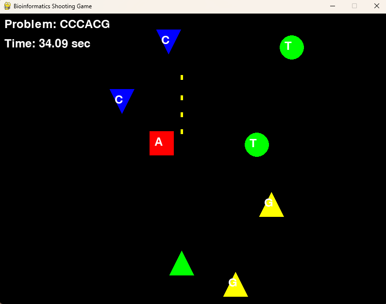

Bioinformatics-Shooting-Game
概要:
本作品は、研究室のオープンキャンパス向けに制作したバイオインフォマティクスをテーマとしたシューティングゲームです。
UnityやJavaScriptだけでなく、学部で一般的に扱うPythonでも簡単なゲームが作成できることを示す目的で制作しました。
技術紹介と教育的要素の両立を意識しており、URLでの公開は行っていませんが、イベント時にローカル実行で展示しました。
使用技術: Python
開発期間: 2024年6月〜2024年7月
特徴: ゲノム配列（A, T, C, G）をテーマにした文字列シューティングゲーム。 指定された塩基配列の文字を狙って撃つという、バイオインフォマティクスとゲーム性を融合させた設計。
画面スクリーンショット:
